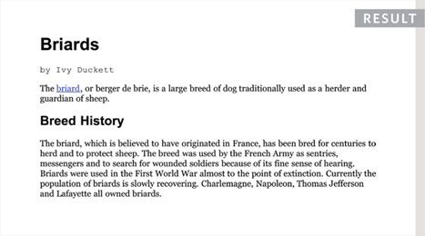
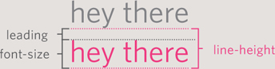
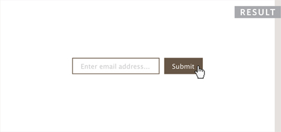

12
TEXT
- Size and typeface of text
- Bold, italics, capitals, underlines
- Spacing between lines, words, and letters
The properties that allow you to control the appearance of text can be split into two groups:
- Those that directly affect the font and its appearance (including the typeface, whether it is regular, bold or italic, and the size of the text)
- Those that would have the same effect on text no matter what font you were using (including the color of text and the spacing between words and letters)
The formatting of your text can have a significant effect on how readable your pages are. As we look through these properties I will also give you some design tips on how to display your type.
TYPEFACE TERMINOLOGY
SERIF
Serif fonts have extra details on the ends of the main strokes of the letters. These details are known as serifs.

In print, serif fonts were traditionally used for long passages of text because they were considered easier to read.
SANS-SERIF
Sans-serif fonts have straight ends to letters, and therefore have a much cleaner design.

Screens have a lower resolution than print. So, if the text is small, sans-serif fonts can be clearer to read.
MONOSPACE
Every letter in a monospace (or fixed-width) font is the same width. (Non-monospace fonts have different widths.)

Monospace fonts are commonly used for code because they align nicely, making the text easier to follow.

WEIGHT

The font weight not only adds emphasis but can also affect the amount of white space and contrast on a page.
STYLE
Italic fonts have a cursive aspect to some of the lettering. Oblique font styles take the normal style and put it on an angle.
STRETCH

In condensed (or narrow) versions of the font, letters are thinner and closer together. In expanded versions they are thicker and further apart.
CHOOSING A TYPEFACE FOR YOUR WEBSITE
When choosing a typeface, it is important to understand that a browser will usually only display it if it's installed on that user's computer.
SERIF
Serif fonts have extra details on the end of the main strokes of the letters.
EXAMPLES:
Georgia
Times
Times New Roman
SANS-SERIF
Sans-serif fonts have straight ends to letters and therefore have a much cleaner design.
EXAMPLES:
Arial
Verdana
Helvetica
As a result, sites often use a small set of typefaces that are installed on most computers (shown above). There are some techniques to get around this limitation (which are covered on pages 271-272).
It is possible to specify more than one typeface and create an order of preference (in case the user does not have your first choice of typeface installed). This is sometimes referred to as a font stack.
MONOSPACE
Every letter in a monospace typeface is the same width. (Non-monospace fonts have different widths.)
EXAMPLES:

CURSIVE
Cursive fonts either have joining strokes or other cursive characteristics, such as handwriting styles.
EXAMPLES:
FANTASY
Fantasy fonts are usually decorative fonts and are often used for titles. They're not designed for long bodies of text.
EXAMPLES:

Browsers are supposed to support at least one typeface from each of the groups above. For this reason, it is common to add the generic font name after your preferred choice of typefaces.
For example, if you wanted serif type, you could write the following:
font-family: Georgia, Times, serif;
TECHNIQUES THAT OFFER A WIDER CHOICE OF TYPEFACES
There are several ways to use fonts other than those listed on the previous page. However, typefaces are subject to copyright, so the techniques you can choose from are limited by their respective licenses.

If you design on a Mac, it is important to check what the typefaces look like on a PC because PCs can render type less smoothly. But if you design on a PC, then it should look fine on a Mac.

SPECIFYING TYPEFACES
font-family
The font-family property allows you to specify the typeface that should be used for any text inside the element(s) to which a CSS rule applies.
The value of this property is the name of the typeface you want to use.
The people who are visiting your site need the typeface you have specified installed on their computer in order for it to be displayed.
You can specify a list of fonts separated by commas so that, if the user does not have your first choice of typeface installed, the browser can try to use an alternative font from the list.
It is also common to end with a generic font name for that type of font (which you saw on pages 269-270).
If a font name is made up of more than one word, it should be put in double quotes.
Designers suggest pages usually look better if they use no more than three typefaces on a page.
We will be using an extended version of the HTML shown on this page for all of the examples in this chapter.


SIZE OF TYPE
font-size


The font-size property enables you to specify a size for the font. There are several ways to specify the size of a font. The most common are:
PIXELS
Pixels are commonly used because they allow web designers very precise control over how much space their text takes up. The number of pixels is followed by the letters px.
PERCENTAGES
The default size of text in browsers is 16px. So a size of 75% would be the equivalent of 12px, and 200% would be 32px.
If you create a rule to make all text inside the <body> element to be 75% of the default size (to make it 12px), and then specify another rule that indicates the content of an element inside the <body> element should be 75% size, it will be 9px (75% of the 12px font size).
EMS
An em is equivalent to the width of a letter m.
We will look at these measurements in greater detail on the next page.
TYPE SCALES
You may have noticed that programs such as Word, Photoshop and InDesign offer the same sizes of text.
This is because they are set according to a scale or ratio that was developed by European typographers in the sixteenth century.
It is considered that this scale for type is pleasing to the eye and it has therefore changed little in the last 400 years.
For this reason, when you are designing pages, using sizes from this scale will help them look more attractive.
On the next page, you can see how to achieve this scale using pixels, percentages, and ems.
Print designers often refer to the size of text in terms of points rather than pixels (hence the use of pt in the scale on the right). A pixel roughly equates to a point because a point corresponds to 1/72 of an inch, and most computer displays have a resolution of 72 dots per inch.
The default size of text in a browser is 16 pixels. So if you use percentages or ems, you calculate the size of text you want based on the default size of the text used in browsers. For example, you could scale down to 12 pixels for body copy and scale up to 24 pixels for headings.
Recently, some web designers have started to leave the body text at the default size of 16 pixels and adjust the other font sizes using a scale that keeps the relative proportions of this one.
When you first see body text at 16 pixels, it might seem quite large. Once you get used to the larger type, however, most people find it far easier to read; and going back to a page where main type is 12 pixels will often then look quite small.

UNITS OF TYPE SIZE
Setting font size in pixels is the best way to ensure that the type appears at the size you intended (because percentages and ems are more likely to vary if a user has changed the default size of text in their browser).
Pixels are relative to the resolution of the screen, so the same type size will look larger when a screen has a resolution of 800×600 than it would when it is 1280×800.
You can also use pt for point sizes instead of px for pixels, but you should only do this when creating style sheets for printer-friendly versions of pages.
The default size of text in a web browser is 16 pixels. Using percentages of this amount, you can create a scale where the default text size is 12 pixels, and headings are sized in relation to this.
It is possible for users to change the default size of text in their web browsers. If they have done this, the fonts will be displayed at the same scale that the designer intended, but at a larger size.
Ems allow you to change the size of text relative to the size of the text in the parent element. Since the default size of text in web browsers is 16 pixels, you can use similar rules to those shown for percentages.
Because users can change the default size of text in their browser, the fonts could all appear larger (or smaller) than the designer intended.
The extra p rule above is to help Internet Explorer 6 and 7 display the fonts at the right size. Without this extra rule, IE6 and IE7 exaggerate the relative sizes of other text.
MORE FONT CHOICE
@font-face
@font-face allows you to use a font, even if it is not installed on the computer of the person browsing, by allowing you to specify a path to a copy of the font, which will be downloaded if it is not on the user's machine.
Because this technique allows a version of the font to be downloaded to the user's computer, it is important that the license for the font permits it to be used in this way.
You add the font to your style sheet using the @font-face rule, as shown on the right.
font-family
This specifies the name of the font. This name can then be used as a value of the font-family property in the rest of the style sheet (as shown in the rule for the <h1> and <h2> elements).
src
This specifies the path to the font. In order for this technique to work in all browsers, you will probably need to specify paths to a few different versions of the font, as shown on the next page.
format
This specifies the format that the font is supplied in. (It's discussed in detail on the next page.)

Many typeface makers do not allow you to use their fonts in this way, but there are open source fonts you can use freely. You can find lists of them at:
www.fontsquirrel.com www.fontex.org www.openfontlibrary.org
When looking at fonts on these sites, it is still important to check the font's license agreement because some fonts are only free for personal use (that is, not for use on commercial websites).
There are some sites that give you access to use commercial fonts, because they negotiated permission to let their customers use these fonts for a fee:
www.typekit.com www.kernest.com www.fontspring.com
Google also provides open source fonts. Rather than adding the @font-face rule to your own style sheet, you link to a CSS file and font files on their servers: www.google.com/webfonts
UNDERSTANDING FONT FORMATS


Because the browser needs to download the font file in order to show it, users might see something known as a Flash of Unstyled Content (FOUC) or Flash of Unstyled Text (FOUT). Two things you can do to try to minimize this behavior are to delete any unneccesary glyphs from the font and/or host the font on a Content Delivery Network (a special type of web hosting that offers faster delivery of files).
Different browsers support different formats for fonts (in the same way that they support different audio and video formats), so you will need to supply the font in several variations to reach all browsers.
If you do not have all of these formats for your font, you can upload the font to a website called FontSquirrel where they will convert it for you:
www.fontsquirrel.com/fontface/generator
Font Squirrel also provides you with the CSS code for the @font-face rule. This is very helpful because, when you are dealing with multiple font formats, the src and format properties of the @font-face rule can get rather complicated.
You can see an example of a more complicated @font-face rule on the left.
The various font formats should appear in your code in this order:
- eot
- woff
- ttf/otf
- svg
BOLD
font-weight
The font-weight property allows you to create bold text. There are two values that this property commonly takes:
normal
This causes text to appear at a normal weight.
bold
This causes text to appear bold.
In this example, you can see that the element whose class attribute has a value of credits has been bolded.
You might wonder why there is a normal weight. This is because if, for example, you created a rule for the <body> element indicating that all text inside the body should appear bold, you might need an option that allows the text in certain instances to appear normal weight. So it is essentially used as an “off switch.”

ITALIC
font-style


If you want to create italic text, you can use the font-style property. There are three values this property can take:
normal
This causes text to appear in a normal style (as opposed to italic or oblique).
italic
This causes text to appear italic.
oblique
This causes text to appear oblique.
In this example, you can see that the credits have been italicized.
Italic fonts were traditionally stylized versions of the font based on calligraphy, whereas an oblique version would take the normal version and put it on an angle.
It is not unusual for the browser to fail to find an italic version of a typeface, in which case it will use an algorithm to place the normal version of the type on a slant, which means that a lot of italic text online is actually oblique.
UPPERCASE & LOWERCASE
text-transform
The text-transform property is used to change the case of text giving it one of the following values:
uppercase
This causes the text to appear uppercase.
lowercase
This causes the text to appear lowercase.
capitalize
This causes the first letter of each word to appear capitalized.
In this example, the <h1> element is uppercase, the <h2> element is lowercase, and the credits are capitalized. In the HTML, the word by in the credits had a lowercase b.
If you do utilize the uppercase option, it is worth looking at the letter-spacing property to increase the gap between each letter as shown on page 284. This will help improve readability.


UNDERLINE & STRIKE
text-decoration


The text-decoration property allows you to specify the following values:
none
This removes any decoration already applied to the text.
underline
This adds a line underneath the text.
overline
This adds a line over the top of the text.
line-through
This adds a line through words.
blink
This animates the text to make it flash on and off (however this is generally frowned upon, as it is considered rather annoying).
In this example, the credits have been underlined. Also, the name of the breed (which is a link) is not underlined, which it would be by default because it is a link.
This property is commonly used by designers to remove the underlines that browsers place under links. Pages 290-291 show how to add or remove an underline when a user hovers over a link.
LEADING
line-height
Leading (pronounced ledding) is a term typographers use for the vertical space between lines of text. In a typeface, the part of a letter that drops beneath the baseline is called a descender, while the highest point of a letter is called the ascender. Leading is measured from the bottom of the descender on one line to the top of the ascender on the next.

In CSS, the line-height property sets the height of an entire line of text, so the difference between the font-size and the line-height is equivalent to the leading (as shown in the diagram above).
Increasing the line-height makes the vertical gap between lines of text larger.


Increasing the default amount of leading can make text easier to read. The vertical space between lines should be larger than the space between each word as this helps the eye move along the line instead of down them. A good starter setting is around 1.4 to 1.5em. Because users can adjust the default size of text in their browser, the value of the line-height property is best given in ems, not pixels, so that the gap between lines is relative to the size of text the user has selected.
LETTER & WORD SPACING
letter-spacing, word-spacing


Kerning is the term typographers use for the space between each letter. You can control the space between each letter with the letter-spacing property.
It is particularly helpful to increase the kerning when your heading or sentence is all in uppercase. If your text is in sentence (or normal) case, increasing or decreasing the kerning can make it harder to read.
You can also control the gap between words using the word-spacing property.
When you specify a value for these properties, it should be given in ems, and it will be added on top of the default value specified by the font.
The default gap between words is set by the typeface (often around 0.25em), and it is unlikely that you would need to change this property regularly. If the typeface is bold or you have increased the space between letters, then a larger gap between words can increase readability.
ALIGNMENT
text-align
The text-align property allows you to control the alignment of text. The property can take one of four values:
left
This indicates that the text should be left-aligned.
right
This indicates that the text should be right-aligned.
center
This allows you to center text.
justify
This indicates that every line in a paragraph, except the last line, should be set to take up the full width of the containing box.
When you have several paragraphs of text, it is considered easiest to read if the text is left-aligned.
Justified text looks at the words on each individual line and creates an equal gap between those words. It can look odd if you end up with large gaps between some words and smaller gaps between others. This often happens when your lines are not very wide or when your text contains long words.


VERTICAL ALIGNMENT
vertical-align

The vertical-align property is a common source of confusion. It is not intended to allow you to vertically align text in the middle of block level elements such as <p> and <div>, although it does have this effect when used with table cells (the <td> and <th> elements).
It is more commonly used with inline elements such as <img>, <em>, or <strong> elements. When used with these elements, it performs a task very similar to the HTML ali gn attribute used on the <img> element, which you met on pages 103-106. The values it can take are:
baseline
sub
super
top
text-top
middle
bottom
text-bottom
It can also take a length (usually specified in pixels or ems) or a percentage of the line height.
INDENTING TEXT
text-indent
The text-indent property allows you to indent the first line of text within an element. The amount you want the line indented by can be specified in a number of ways but is usually given in pixels or ems.
It can take a negative value, which means it can be used to push text off the browser window. You can see this technique used in this example, where the <h1> element uses a background image to represent the heading. The text has been moved far to the left, off the screen. (Background images are covered on pages 413-418.)
We still want the heading text to be on the page (for search engines and those who cannot see the image), but we cannot have it displayed on top of the logo or it will be unreadable. By pushing it 9,999 pixels to the left, it is way out of sight but still in the HTML code.
The second rule in this example indents the credits 20 pixels to the right.


CSS3: DROP SHADOW
text-shadow


The text-shadow property has become commonly used despite lacking support in all browsers.
It is used to create a drop shadow, which is a dark version of the word just behind it and slightly offset. It can also be used to create an embossed effect by adding a shadow that is slightlylighter than the text.
The value of this property is quite complicated because it can take three lengths and a color for the drop shadow.
The first length indicates how far to the left or right the shadow should fall.
The second value indicates the distance to the top or bottom that the shadow should fall.
The third value is optional and specifies the amount of blur that should be applied to the drop shadow.
The fourth value is the color of the drop shadow.
The text-shadow property has become very popular but at the time of writing it was not supported in any versions of Internet Explorer (currently IE9). Other browser makers introduced it in Firefox 3.1, Safari 3, Chrome 2 and Opera 9.5.
FIRST LETTER OR LINE
:first-letter, :first-line
You can specify different values for the first letter or first line of text inside an element using
:first-letter and :first-line.
Technically these are not properties. They are known as pseudo-elements.
You specify the pseudo-element at the end of the selector, and then specify the declarations as you would normally for any other element.
It is worth trying this example in your browser so that you can see how the first-line pseudo-element will only affect the first line of text, even if you resize your browser window and less or more words appear on each line.
CSS introduces both pseudo-elements and pseudo-classes. A pseudo-element acts like an extra element is in the code. In the case of the first-letter and :first-line pseudo elements, it is as if there is an extra element around the first letter or the first line which can have its own styles applied.
A pseudo-class acts like an extra value for a class attribute. In the case of the :visited pseudo-class, which you meet on the next page, it allows you to have different styles for links that have been visited. Similarly, the :hover pseudo-class allows you to style elements differently when a user hovers over them.
STYLING LINKS
:link, :visited


Browsers tend to show links in blue with an underline by default, and they will change the color of links that have been visited to help users know which pages they have been to.
In CSS, there are two pseudo-classes that allow you to set different styles for links that have and have not yet been visited.
:link
This allows you to set styles for links that have not yet been visited.
:visited
This allows you to set styles for links that have been clicked on.
They are commonly used to control colors of the links and also whether they are to appear underlined or not.
On the left, you can see that visited links are shown in a different color to help visitors know what they have already seen.
Often, the :hover and :active pseudo-classes (covered on the next page) are used to alter the appearance of a link when a user hovers over or clicks on it.
RESPONDING TO USERS
:hover, :active, focus
There are three pseudo-classes that allow you to change the appearance of elements when a user is interacting with them.
:hover
This is applied when a user hovers over an element with a pointing device such as a mouse. This has commonly been used to change the appearance of links and buttons when a user places their cursor over them. It is worth noting that such events do not work on devices that use touch screens (such as the iPad) because the screen is not able to tell when someone is hovering their finger over an element.
:active
This is applied when an element is being activated by a user; for example, when a button is being pressed or a link being clicked. Sometimes this is used to make a button or link feel more like it is being pressed by changing the style or position of the element slightly.
:focus
This is applied when an element has focus. Any element that you can interact with, such as a link you can click on or any form control can have focus.

Focus occurs when a browser discovers that you are ready to interact with an element on the page. For example, when your cursor is in a form input ready to accept typing, that element is said to have focus. It is also possible to use the tab key on your keyboard to move through the interactive items on a page. When pseudo-classes are used, they should appear in this order: :link, :visited, :hover, :focus, :active.
ATTRIBUTE SELECTORS
You met the most popular CSS selectors on page 238. There are also a set of attribute selectors that allow you to create rules that apply to elements that have an attribute with a specific value.
EXAMPLE TEXT
This example combines many of the techniques shown in this chapter.
The sizes of fonts are controlled using the font-size property. The headings are changed from bold to normal using the font-weight property. We have also specified different choices of font using the font-family property.
The <h1> element uses the CSS3 text-shadow property to create the drop shadow behind it. The <h2> element is converted to uppercase using the text-transform property, and to make the uppercase text easier to read, we have increased the space between each letter using the letter-spacing property.
For the main body text, we have increased the line-height property so there is a bigger gap between each line of text, thereby making it easier to read. In the first paragraph, the first-line pseudo-element allows us to style the first line of the introduction in bold. Finally, the credit is italicized and aligned to the right-hand side of the page.
<!DOCTYPE html>
<html>
<head>
<title>Text</title>
<style type-“text/css”>
body {
padding: 20px;}
h1, h2, h3, a {
font-weight: normal;
color: #0088dd;
margin: 0px;}
h1 {
font-family: Georgia, Times, serif;
font-size: 250%;
text-shadow: 2px 2px 3px #666666;
padding-bottom: 10px;}
h2 {
font-family: “Gill Sans”, Arial, sans-serif;
font-size: 90%;
text-transform: uppercase;
letter-spacing: 0.2em;}
h3 {
font-size: 150%;}
p {
font-family: Arial, Verdana, sans-serif;
line-height: 1.4em;
color: #665544;}
p.intro:first-line {
font-weight: bold;}
.credits {
font-style: italic;
text-align: right;}
a {
text-decoration: none;}
a:hover {
text-decoration: underline;}
</style>
</head>
<body> <h1>Briards</h1> <h2>A Heart wrapped in fur</h2> <p class-“intro”>The <a class-“breed” href-“http://en.wikipedia.org/wikiBriard”> briard</a>, or berger de brie, is a large breed of dog traditionally used as a herder and guardian of sheep.</p> <h3>Breed History</h3> <p>The briard, which is believed to have originated in France, has been bred for centuries to herd and to protect sheep. The breed was used by the French Army as sentries, messengers and to search for wounded soldiers because of its fine sense of hearing. Briards were used in the First World War almost to the point of extinction. Currently the population of briards is slowly recovering. Charlemagne, Napoleon, Thomas Jefferson and Lafayette all owned briards.</p> <p class=“credits”>by Ivy Duckett</p> </body> </html>
SUMMARY TEXT
- There are properties to control the choice of font, size, weight, style, and spacing.
- There is a limited choice of fonts that you can assume most people will have installed.
- If you want to use a wider range of typefaces there are several options, but you need to have the right license to use them.
- You can control the space between lines of text, individual letters, and words. Text can also be aligned to the left, right, center, or justified. It can also be indented.
- You can use pseudo-classes to change the style of an element when a user hovers over or clicks on text, or when they have visited a link.